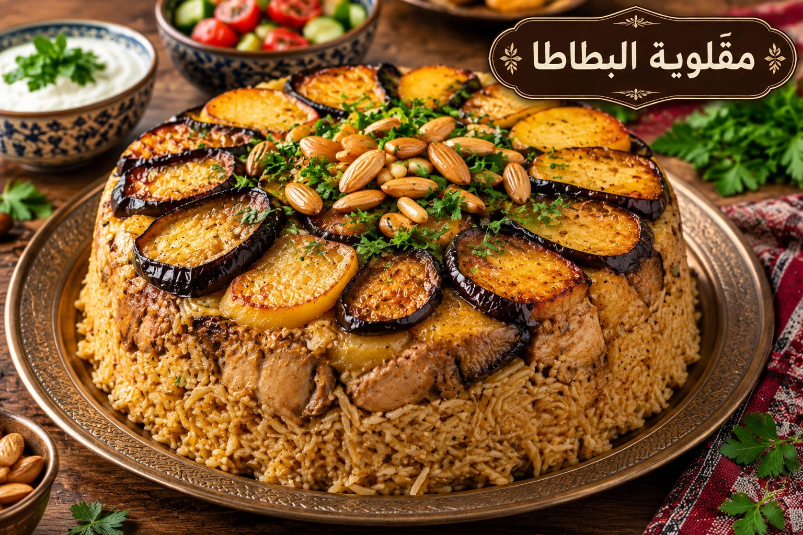

مقلوبة البطاطا
أرز مقلوب بالدجاج والبطاطا

مقادير مقلوبة البطاطا
- 2½ كوب أرز بسمتي
- 700 غ دجاج
- 3 بطاطا شرائح
- 1 بصلة
- 1½ ملعقة صغيرة ملح
- 1 ملعقة صغيرة بهار مشكل
- ½ ملعقة صغيرة قرفة
- ½ ملعقة صغيرة فلفل أسود
- 4 أكواب مرق
طريقة عمل مقلوبة البطاطا
- اسلقي الدجاج مع البصل والبهارات واحتفظي بالمرق.
- حمري شرائح البطاطا وصفيها.
- انقعي الأرز 20 دقيقة ثم صفيه.
- رتبي الدجاج والبطاطا ثم الأرز وأضيفي المرق الساخن.
- بعد الغليان خففي النار 25 دقيقة ثم أريحيها 10 دقائق واقلبيها.